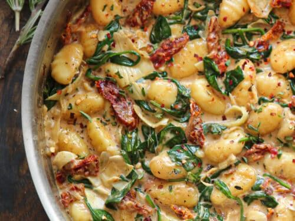

Back to Main Page
Creamy Tuscan Wild Mushroom Gnocchi

Description
Creamy Tuscan Wild Mushroom Gnocchi is a luxurious, restaurant-quality Italian-American comfort dish that brings rich, sophisticated flavors to the vegetarian table.
It features pillowy, tender potato gnocchi tossed in a velvety cream sauce infused with earthy wild mushrooms, sweet sun-dried tomatoes, and fresh baby spinach.
The depth of flavor comes from searing the mushrooms until deeply browned, creating a savory foundation that perfectly mimics the richness of a traditional meat-based dish.
This recipe strikes a perfect balance between everyday convenience and gourmet elegance, making it ideal for both quick weeknight dinners and special occasions.
As the gnocchi simmers in the sauce, it absorbs the aromatic notes of garlic, herbs, and Parmesan cheese, ensuring every single bite is deeply satisfying.
Serve it hot straight from the skillet alongside a crisp green salad and crusty artisan bread to soak up every drop of the decadent Tuscan sauce.
Ingredients
- Potato gnocchi: 1 pound (16 ounces, fresh or shelf-stable)
- Wild mushrooms: 10 ounces, sliced (such as cremini, shiitake, or oyster mushrooms)
- Garlic: 4 cloves, minced
- Sun-dried tomatoes: 1/2 cup, drained and chopped (oil-packed preferred)
- Fresh baby spinach: 3 cups, packed
- Olive oil: 1 tablespoon (or use the oil from the sun-dried tomato jar for extra flavor)
- Butter: 2 tablespoons
- Vegetable broth: 1/2 cup
- Heavy cream: 1 cup
- Parmesan cheese: 1/2 cup, freshly grated (ensure vegetarian-certified if strict)
- Italian seasoning: 1 teaspoon
- Red pepper flakes: 1/4 teaspoon (optional, for a subtle kick)
- Salt and black pepper: To taste
Steps
- Boil the gnocchi: Bring a large pot of salted water to a rolling boil, add the gnocchi, and cook according to package instructions until they float to the top (about 2 to 3 minutes), then drain and set aside.
- Sear the mushrooms: Heat the olive oil and butter in a large skillet over medium-high heat, add the sliced wild mushrooms, and cook undisturbed for 3 to 4 minutes until they turn a deep golden-brown before stirring.
- Sauté the aromatics: Turn the heat down to medium, add the minced garlic, chopped sun-dried tomatoes, Italian seasoning, and optional red pepper flakes to the skillet, stirring continuously for 1 minute until highly fragrant.
- Deglaze the skillet: Pour in the vegetable broth, using a wooden spoon to scrape up all the flavorful browned bits stuck to the bottom of the pan, and let it simmer for 2 minutes to reduce slightly.
- Build the cream sauce: Reduce the heat to low, pour in the heavy cream and grated Parmesan cheese, and stir well until the cheese melts completely and the sauce begins to simmer gently.
- Wilt the spinach: Add the fresh baby spinach to the skillet, stirring gently for 1 to 2 minutes until the leaves are completely wilted into the warm cream sauce.
- Season the sauce: Taste the sauce and season with salt and black pepper according to your personal preference.
- Combine and coat: Add the cooked, drained gnocchi directly into the skillet, tossing gently to coat the pasta thoroughly in the rich, velvety sauce.
- Simmer and serve: Let everything simmer together for 1 to 2 minutes so the gnocchi absorbs the flavors, then remove from heat and serve immediately while hot.